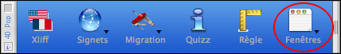
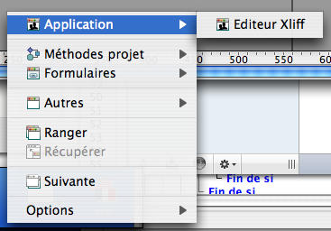

Usage
The offered menu includes:
1) the open windows of the database presented hierarchically by type.
- A first group named "Application" is constituted of open windows in the other processes that the 4D process.
Typically these are windows that you opened in application methods or to test your development.

- A second group constituted by items "Project Methods", "Forms", "Database Methods" and "Triggers" grouping together respectively these different types of windows in a hierarchic menu attached to each of the ditto. In the item "Forms", These are presented by their name and include a submenu grouping together all the open elements of this form.

- The last group "Others" include the various open windows in development methods (Explorer, ToolBox...)
2) Tools to manage windows
- "Order" allows reorganizing the open windows in cascades.
- "Recover" replace in the screen a window that would be inaccessible after a machine change or of resolution.
- "Next" allows passing in the foreground the immediately situated window after the window of first current plan.
- "Options" allows regulating certain behavior of the component of which the by default associated action to the button of the palette.
Source code provided
This component is given in compiled version, but you will find the source code in the folder "Sources" inside the component folder.